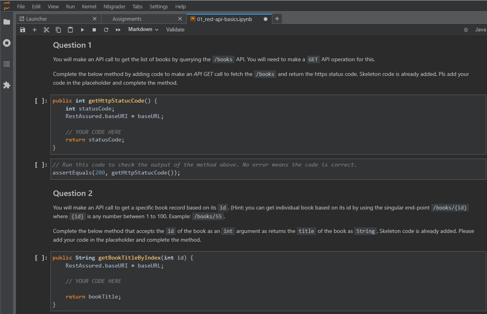
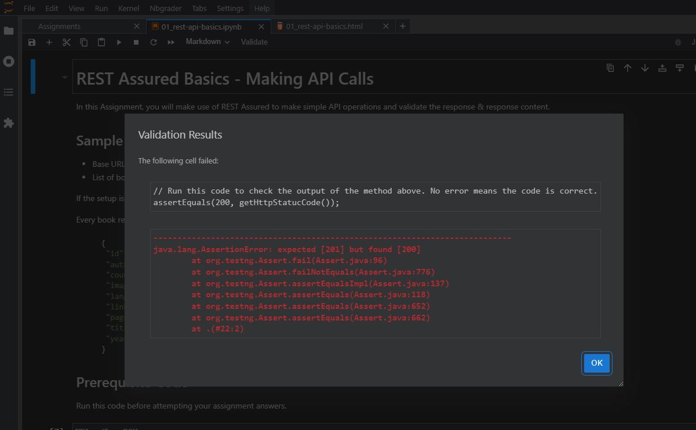
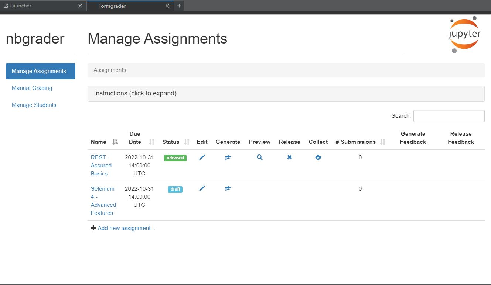
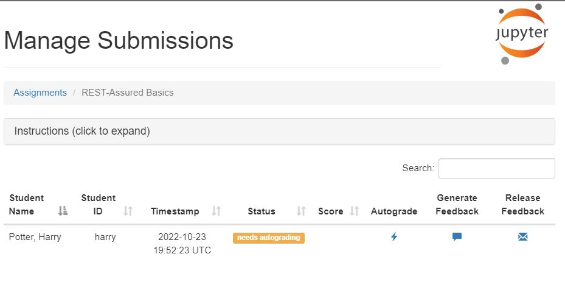
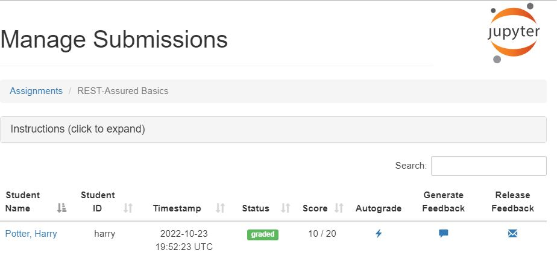

Upskill server Docker image is a fun way to define Test Automation Coding Assignments and publish them to your team or a group of enthusiasts. They can complete the assignment and submit their answers which can be auto-evaluated and scored with an option of manual grading as well.
You can use the Upskill Server as an Instructor or as a Student.
As an Instructor, you can
As a student, you can
tests that will be used by Auto-Evaluator to evaluate the answerstests can be exposed, kept hidden or exposed partially with the students as decided by the InstructorEvaluate button that the students can use to evaluate their answers before submittingThis is a quick demo of how to use the Upskill-Server for defining assignments for your teams in a fun way. This demo has one sample assignment on the topic of API testing using REST-Assured tool.
When you run the demo, 2 containers start running. One is the Upskill Server. The other is the API-Server used as dummy/mock APIs to be used by students to solve the questions in the assignment.
Prerequisite - Docker is installed on your machine
git clone dineshvelhal/upskill-server-demo
cd upskill-server-demo
docker-compose commanddocker-compose up
docker-compose file contents:
version: '3.3'
services:
upskill-server:
image: "dineshvelhal/upskill-server:latest"
container_name: "upskill-server"
networks:
- upskill_net
ports:
- "8000:8000"
api-server:
image: "dineshvelhal/json-server-demo:latest"
container_name: "api-server"
networks:
- upskill_net
ports:
- "80:80"
networks:
upskill_net:
This demo comes with 4 user accounts - one Instructor and 3 Students
hermione - Student
set the passwords for all 4 accounts.
For this you need to start a shell in the Upskill-Server container and set the user passwords using the passwd command. This is a one time activity.
docker exec -ti upskill-server bash
passwd albus
passwd harry
password ron
passwd hermione
Please note that the passwd command is interactive so you need to set the passwords by entering them twice for each user.
Well Done! now you are all set to use the Upskill server. Open the upskill server URL (Upskill Server) in a browser and log in using the Instructor or Student account. The Mock APIs to be used for the assignments can be accessed by opening the URL API Server
When you log in as an Instructor, you will see a sample assignment is available in home directory. You can use it to get yourself familiar with Upskill Server.
Assignment (Student's view) 
Self-validation by student before submitting the assignment 
Manage Assignmets view for Instructor 
Ealuate assignment view of the Instructor 
Ealuated assignment view 